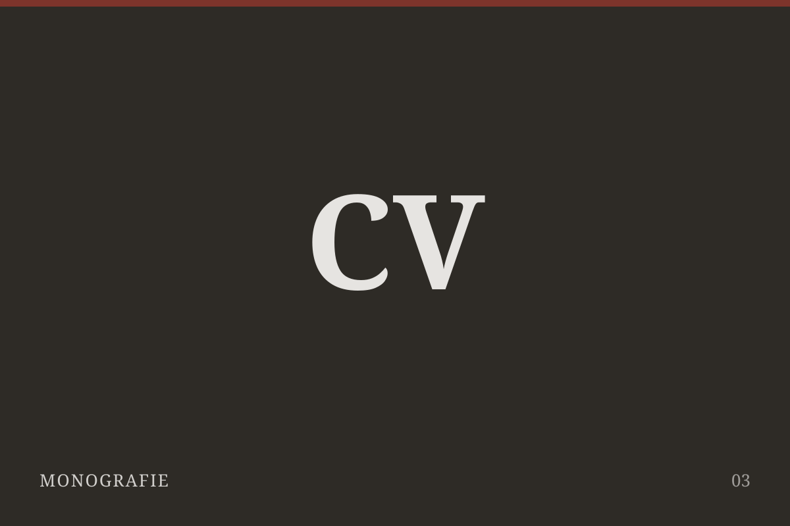
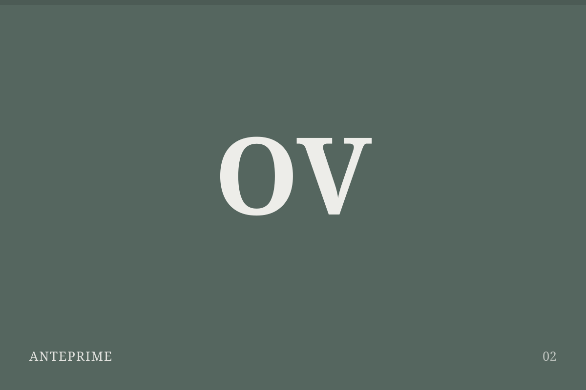
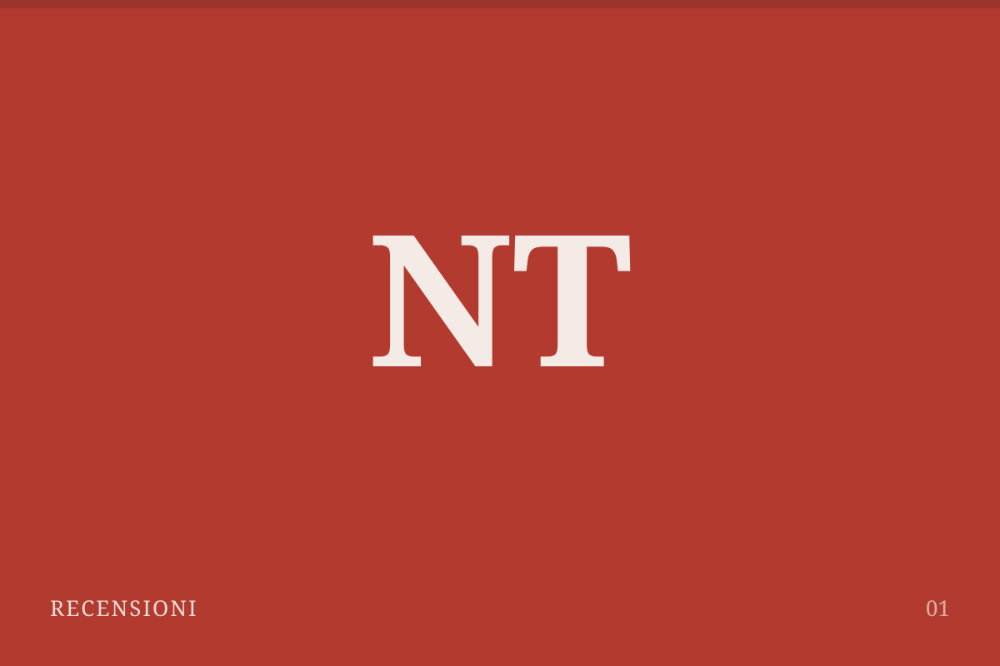

Dossier / Panel Pixel
Resident Evil
Trent'anni di paura, mutazioni e rinascite
Resident Evil: come una villa ha cambiato per sempre l'orrore videoludico
Dalle porte che nascondevano i caricamenti alle metamorfosi della saga: anatomia di una paura capace di cambiare forma senza scomparire.
Resident Evil non è soltanto una serie longeva. È un laboratorio che, per trent'anni, ha osservato il modo in cui abbiamo paura e ha trasformato quell'osservazione in spazio, ritmo e controllo.
Sequenza eventi
La saga in quattro svolte
1996
La soglia
La villa definisce il survival horror.
1998
La città
L'epidemia invade lo spazio urbano.
2005
La mutazione
L'azione riscrive il linguaggio della serie.
2017
La rinascita
La prima persona riporta la paura vicino al corpo.
Le origini
La villa e il contagio
1996—1998
Spazi chiusi, risorse limitate e la sensazione che ogni porta possa nascondere qualcosa.
Il primo capitolo costruisce la tensione attraverso l'attesa. La telecamera non segue il personaggio: lo osserva, lo comprime dentro inquadrature già decise e trasforma ciò che resta fuori campo in una minaccia.
L'espansione
Raccoon City
1998—2000
L'orrore esce dalla villa e trasforma una città intera in un labirinto.
Doppia esposizione
Originale / Remake

1998
La geometria fissa, il fuori campo e l'immaginazione del giocatore.

2019
La città riemerge attraverso luce dinamica, prossimità e materia.
La trasformazione
Quando l'orrore imparò a correre
2005—2016
La saga cambia ritmo e influenza l'intero videogioco d'azione.
La rinascita
Tornare ad avere paura
2017—oggi
Una nuova prospettiva riporta il corpo, la casa e la vulnerabilità al centro dell'esperienza.